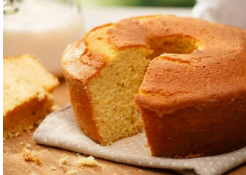

Ingredientes:
- 2 xícaras de chá de fubá
- 1 xícara de chá de farinha de trigo
- 1 colher de sopa de fermento em pó
- 3 ovos
- 1 xícara de chá de leite
- 1 xícara de chá de óleo
- 2 xícaras de chá de açúcar
Modo de Preparo:
- Com auxílio de uma peneira, coloque 2 xícaras de chá de fubá, 1 xícara de
chá de farinha de trigo e 1 colher de sopa de fermento em pó em um
recipiente. Misture e reserve.
- No liquidificador, coloque 3 ovos, 1 xícara de chá de leite, 1 xícara de chá de
óleo e 2 xícaras de chá de açúcar. Bata até ficar homogêneo.
- Transfira a massa para uma forma untada com manteiga e polvilhada com
fubá.
- Asse a 180°C por 30 minutos.
Resultado Final:

Imagem ilustrativa do Bolo de Fubá após o preparo.